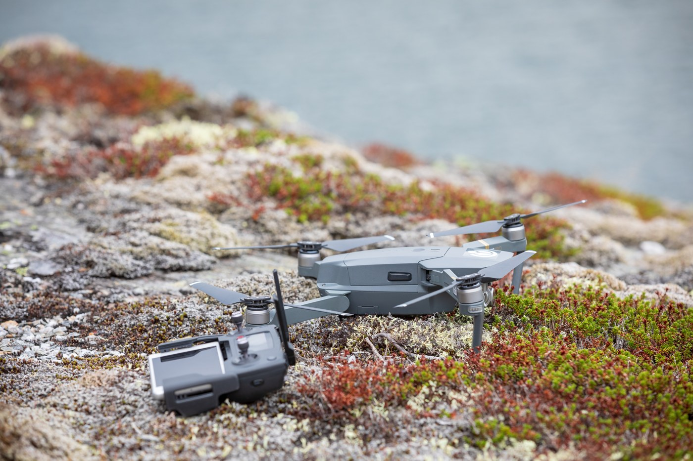

The Autopsy Report · Device #083
DJI Mavic Pro
The Mavic Pro is the drone that changed the shape of the industry: launched in late 2016, it folded down to the size of a water bottle yet carried a stabilized 4K camera and flew for nearly half an hour. Every pocket drone since — including the Mini line covered in this very batch — is its descendant.
What is this thing?
The DJI Mavic Pro is a foldable quadcopter drone with a stabilized 4K camera on a 3-axis gimbal, model M1P. It launched in late September 2016 with a headline spec that was unheard of at the time: a 12-megapixel 1/2.3-inch CMOS sensor shooting 4K/30 video, 27 minutes of flight time, and a 7 km control/video link — all folded into something you could fit in a jacket pocket. Unmanned Systems Technology
Whose box is this?
This one isn't on our bench — yet. Nothing here comes from a BareBoard teardown: no disassembly, no boot logs, no bench measurements, no firmware in our hands. Everything below is built from public records — the government's FCC filing, the manufacturer's own documents, and contemporary press — read carefully and cited line by line. That's the deal with these reports: when a fact can't be verified from a public record, we say so, out loud.
The moment this hardware crosses our bench, this report gets a second act: our own photos, our own measurements, and anything the public record got wrong gets corrected.
A short history
DJI announced the Mavic Pro on September 27, 2016, positioning it as the company's first truly portable folding drone — the "personal drone" pitched at creators rather than specialists. AppleWorld.today
The concept worked: the Mavic line became DJI's most important product family, and its direct successors — the Mavic 2, the Mavic Air line, and the sub-250 g Mini series — inherited both its folding geometry and its market position. The Mini 2 in this same report batch is the third-generation descendant of the idea the Mavic Pro proved.
The outside

The Mavic Pro's party trick is its hinges: four arms fold flat against a rectangular body, and the two front arms' propellers fold too. Unfolded, it spans about 335 mm diagonally; folded, it's roughly 198 × 83 × 83 mm. ePhotozine The nose carries the camera on its 3-axis gimbal — the fragile-looking egg in the drone's jaw — flanked by the forward vision-sensor pair.
Reading the plastic
Mold marks, date wheels, material codes — the shell's birth certificate. This is bench-only evidence: without the physical unit in our hands, there's nothing honest to read here. What the enclosure looks like is described above from public photos; what's molded into it awaits the bench.
The board
The public FCC record for this device includes internal photographs showing the main board, the GPS module, and the RF section — evidence that the airframe is a densely packed multi-board stack rather than a single PCB. fccid.io filing
From the public photos, no chip markings are legible: the marks are obscured by shielding cans and viewing angle, not by any verified redaction. That means the board can be described honestly only at the block level — flight control, vision processing, video encoding, and the OcuSync radio chain — with the component details still to be confirmed from a bench unit.
Under the microscope: the chips
Unknown. The public internal photos don't resolve any legible chip markings, and no verified bill of materials is published for the M1P. DJI's silicon choices in this era were a mix of in-house and off-the-shelf parts, but naming any specific chip here would be speculation. This is exactly the kind of fact a bench teardown exists to settle.
The government's file on this box
The FCC equipment authorization is FCC ID SS3-M1P1607, grantee SZ DJI TECHNOLOGY CO., LTD. fccid.io filing The filing includes external and internal photographs of the aircraft — the internal shots are the source of everything above about the board stack.
Listening in
We have no boot log for this device — no unit on the bench means nothing to listen to. But the posture is worth stating up front, because it governs everything BareBoard ever does with a live device.
We listen, we don't knock. A serial console is a place to watch a device narrate its own startup, not a place to log in, change things, or break past anything the manufacturer locked. On our bench we attach read-only: power and ground, one receive wire, and silence on the transmit line. We never use JTAG or SWD debug headers to take control, never extract or modify firmware, never hunt for credentials, and never publish anything that would let someone else bypass a lock or defeat authentication.
When this device arrives, the first question will be: where does it talk, and does it talk to us unprompted? Until then, that question stays open.
What we found
- The Mavic Pro (model M1P) launched September 27, 2016: the first folding, pocket-portable DJI drone.
- Its public FCC filing confirms a multi-board internal stack — main board, GPS module, RF section — but no legible chip markings.
- It established the template every Mini-series drone in this batch descends from.
What we didn't do
- We never opened a unit, attached to a debug port, or powered one up for this report.
- We never extracted, modified, or shared any firmware or software.
- We never published or used any credentials, keys, or bypass techniques.
- No boot logs, no bench measurements, and no photos of our own — because there is no unit of ours to photograph. The device photo above is credited in its caption.
By the numbers
- Launch: September 27, 2016
- Model: M1P
- Camera: 12 MP 1/2.3″ CMOS, 4K/30, 3-axis gimbal
- Flight time: 27 minutes (advertised)
- Link: OcuSync 1.0, 7 km
- FCC ID: SS3-M1P1607
- Bench status: Not yet on our bench
Words to know
- Gimbal
- A motorized mount that keeps the camera level and steady while the drone moves.
- OcuSync
- DJI's proprietary control-and-video transmission system.
- Shielding can
- A metal cover over RF circuitry that blocks electromagnetic interference — and, incidentally, prying eyes.
Sources & confidence
- DJI announces Mavic Pro portable folding drone — Unmanned Systems Technology, Sep 2016 link — Confirmed
- DJI launches the Mavic Pro personal drone — AppleWorld.today, Sep 2016 link — Confirmed
- DJI Mavic Pro foldable drone announced — ePhotozine, Sep 2016 link — Confirmed
- FCC filing SS3-M1P1607, grantee SZ DJI TECHNOLOGY CO., LTD. (internal photos: main board, GPS, RF views) — fccid.io link — Confirmed
- Chip markings on the board — not legible in public photos; no verified bill of materials — Unknown
- Photo: Tore Sætre, via Wikimedia Commons, licensed CC BY-SA 4.0 link — Confirmed
.jpg){kind=link}
Legal note. BareBoard is an educational project. Everything on this page is derived from public records — our own bench work begins only when hardware arrives. We don't publish, host, or distribute firmware, keys, passwords, or credentials, and nothing here bypasses a lock, defeats authentication, or extracts software from a device. Product names and trademarks belong to their respective owners and appear here only to identify the hardware. If you believe anything here infringes your rights, contact us and we'll address it promptly.